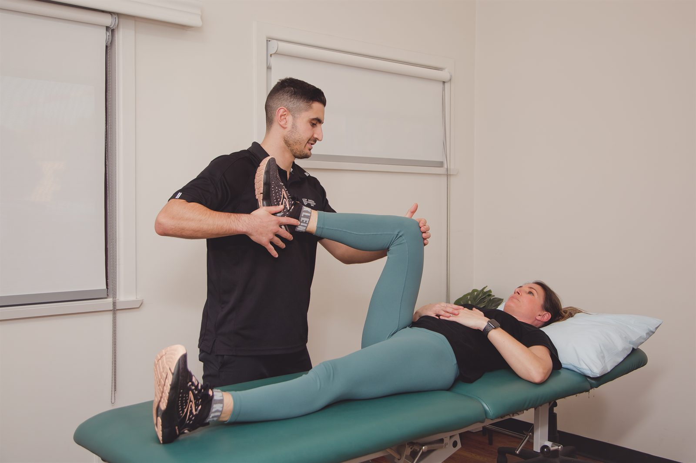
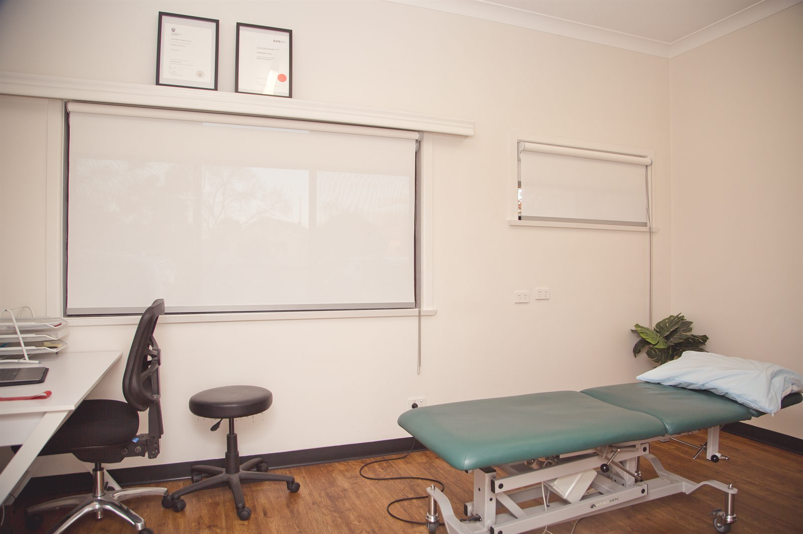

Physiotherapy built around the goals written in your plan (mobility, strength, balance, independence) delivered one-on-one in the clinic or at home, and coordinated with the rest of your support team.

Physiotherapy for disability-related support needs, with goals drawn from your daily life and NDIS plan.
Your plan might include goals such as walking further, getting in and out of a car, managing the front steps or keeping up with work. We discuss those goals and assess the disability-related support you need. The proposed physiotherapy must meet NDIS funding requirements and fit the supports available in your plan.
The first appointment starts with a conversation. We talk about what a good day looks like, what currently gets in the way, and which goals to work on in physiotherapy. Then we assess: strength, movement, balance, walking, transfers, endurance, and how you manage the specific tasks that matter to you. From that we set out a program with measurable markers, so you and your plan manager can both see whether it is working.
Sessions are one-on-one. We agree what to measure with you: walking distance, the assistance needed for a transfer, or a daily task you want to maintain. These measures help us decide whether the program remains useful and what needs to change.
Usually from the Capacity Building budget, under Improved Daily Living.
Physiotherapy is generally funded as a therapy support within Capacity Building: Improved Daily Living. It can cover eligible assessment, therapy, training and reports. A goal in your plan does not automatically make every treatment an NDIS-funded support. Ordinary treatment for a new injury or recovery from surgery is generally a health-system responsibility. If you are not sure whether your plan includes it, your plan manager or support coordinator can confirm quickly, and we are happy to speak with them directly.
For plan-managed funding, we invoice your plan manager for eligible, agreed supports. For self-managed funding, we invoice you. You can claim from an invoice before paying, or pay first and claim from the receipt, subject to the agreed payment terms. Use the my NDIS app or the participant portal used for your plan. Agency-managed appointments: [TBC pending confirmation of NDIS registration]. Please check this with us before booking. The NDIS explains the payment options.
No referral is needed. What helps most is sharing the relevant goals and funding details from your plan, plus your NDIS number and your plan manager’s details. If you have reports from other therapists (occupational therapy, exercise physiology, speech, a specialist) bring those too, so we are adding to the picture rather than duplicating work.

The setting depends on what you need to practise. At the clinic, we can use equipment for exercise and walking assessments. At home, we can look at your own front steps, lounge or kitchen and practise tasks in the place you do them every day.
We offer home visits across Dapto and the wider Illawarra, including Wollongong, Shellharbour, Berkeley, Kanahooka, Horsley, Unanderra, Kembla Grange and Albion Park. You can discuss a mix of clinic and home appointments. Visit availability and travel charges need to be agreed before booking. Home-visit travel and report charges: [TBC].
Access matters and we would rather sort it out before you arrive than after. Tell us what you need when you book (parking, mobility aids, a support worker attending, a longer appointment, a quieter time of day) and we will set the appointment up around it.
Your report records what was assessed, the work completed and recommendations for ongoing support.
A report for a plan reassessment explains how your disability affects everyday tasks and what support you need. It records assessment findings, the goals you have worked on and any changes in function. Maintaining an ability can be relevant as well as developing a new one.
We record that information during your appointments. Assessment measures are recorded at the start and repeated at intervals, goals are written in observable terms, and progress notes track what changed. When your review comes around, we can produce a report that sets out where you started, what has changed, what has not, and what we recommend for the next plan, with reasons.
With your consent, we can discuss the report with your support coordinator or plan manager. We agree the report scope and any charge before preparing it.
Read about balance, spinal symptoms and appointment costs.
Vestibular physiotherapy for BPPV and balance, plus treatment for neck-related headaches.
Read moreConditionHands-on treatment and targeted exercise for back pain, neck pain and sciatica.
Read moreFunding pathwayWhat an appointment costs, and every way it can be funded: private health, Medicare, WorkCover, NDIS.
Read moreBook an appointment, or call us and we will talk through your plan and what physiotherapy could add to it.